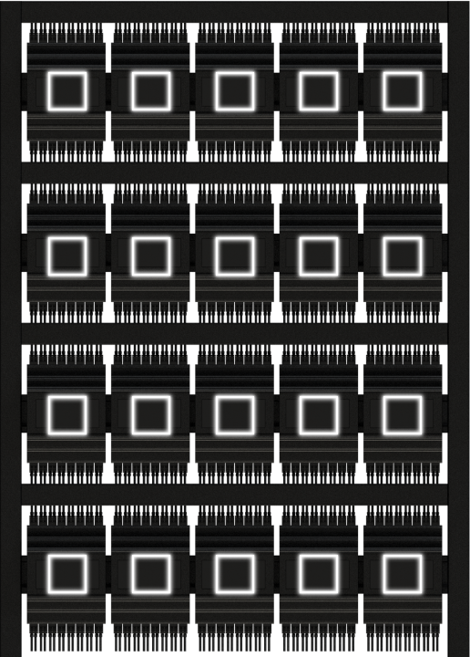

Smart home
Smart in use
Smart in everything
Ви можете керувати вашими приладами дистанційно та створювати власні унікальні сценарії роботи Розумного будинку.


Переваги
Основні елементи керування розумним будинком та його переваги. Опис та перелік функціоналу.
Для максимального комфорту мешканців будинку, розробники “розумного” комплексу передбачили можливість регулювання роботи повітроводів. За правильне виконання поставленого завдання відповідають повітряні клапани. Ці пристрої встановлюються на припливних і припливному – витяжних воздуховодах. Як тільки користувач запускає систему, клапан починає працювати. Зв’язок в даному випадку забезпечує вісь, що з’єднує елемент з електроприводом, підключеним до системи центрального управління «розумного будинку».
Сучасні системи кліматичного контролю можуть охолоджувати, а також нагрівати приміщення. Також за допомогою кондиціонерів можна фільтрувати повітря або зволожувати його. “Розумний будинок” зможе виконувати контроль і регулювання роботи кожного окремого компонента спліт – системи. При цьому від власника буде потрібно мінімум уваги і сил.
Для максимального комфорту мешканців будинку, розробники “розумного” комплексу передбачили можливість регулювання роботи повітроводів. За правильне виконання поставленого завдання відповідають повітряні клапани. Ці пристрої встановлюються на припливних і припливному – витяжних воздуховодах. Як тільки користувач запускає систему, клапан починає працювати.